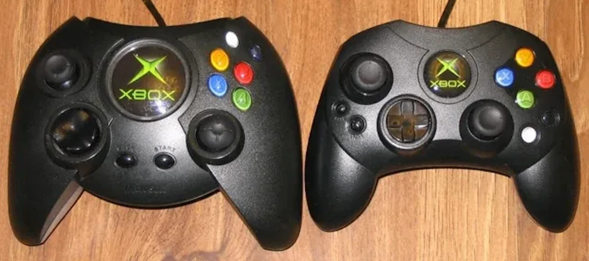
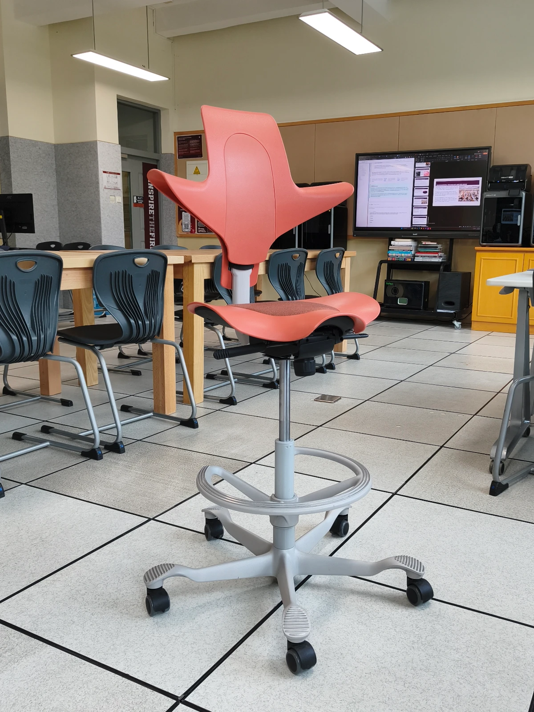
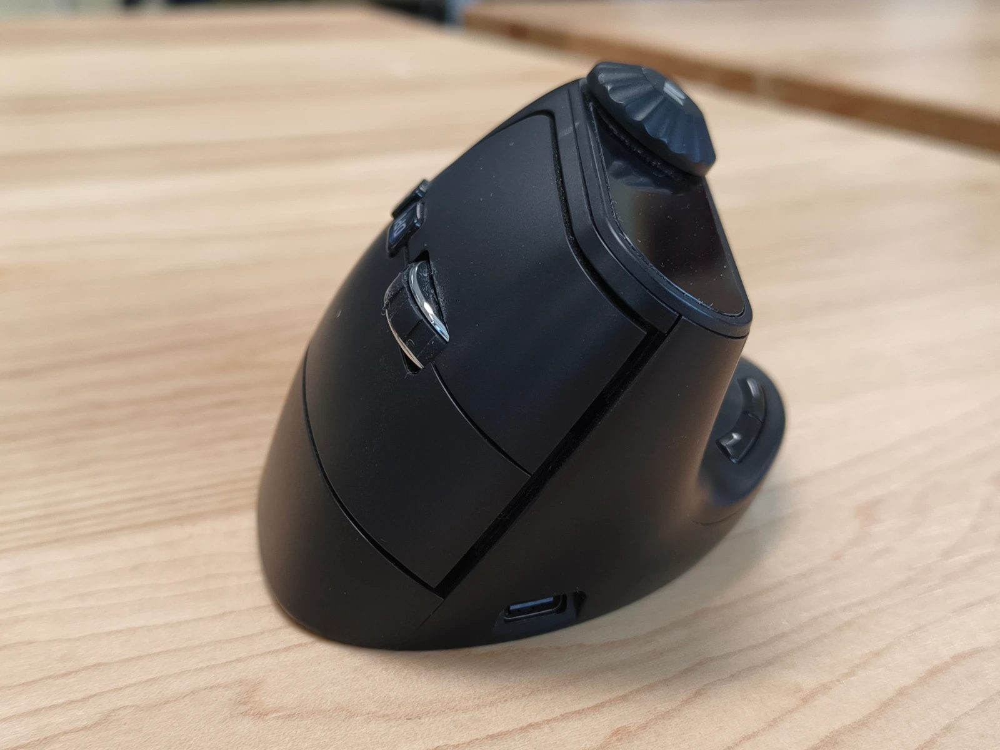
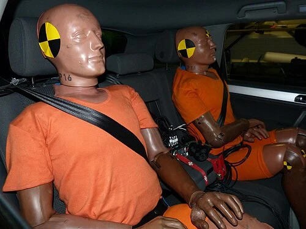
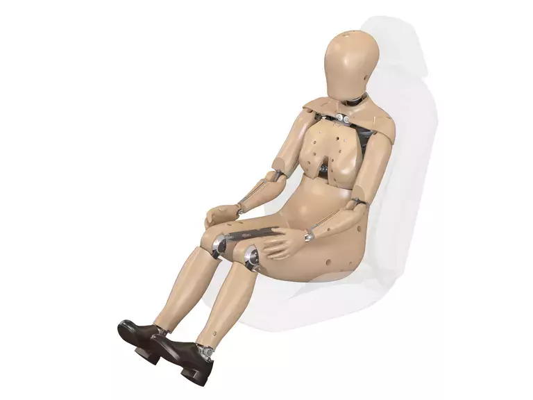
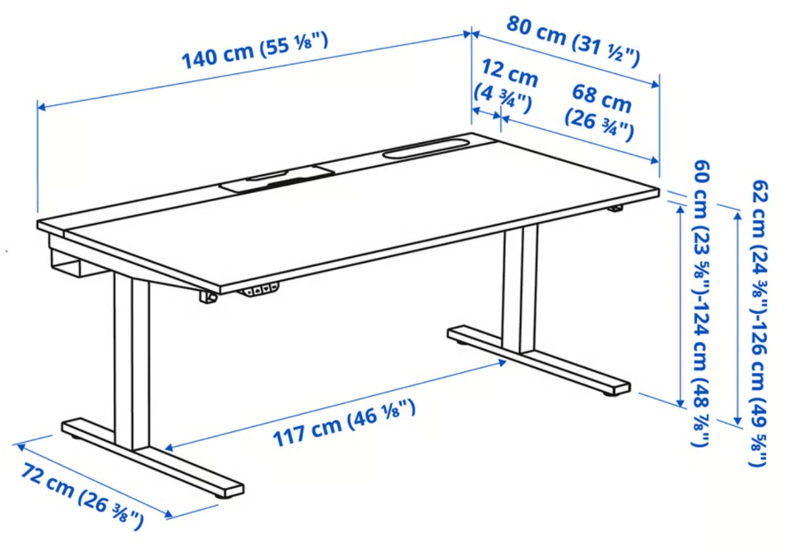
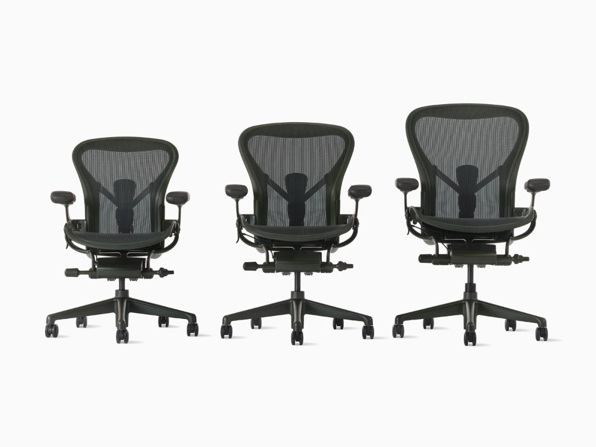

{kind=link}
{kind=link}

Xbox Controller Redesign
Built for one hand size, then rebuilt for everyone else.
Read spotlight →Guiding questionHow do ergonomic considerations influence the design of a product?
Ergonomics is the first topic in the course for a reason. Every object you have ever used was built around an assumption about a body. Once you can name those assumptions, you start seeing them everywhere. The door you have to shove with your shoulder, the shelf you cannot reach without a stool, the phone that needs two hands when your last one needed only one: none of that is bad luck. Somebody chose a dimension, and in doing so somebody decided whose body it would fit.
What makes this topic useful, and not just interesting, is that it gives you evidence. Anthropometric data and percentiles let you argue that a handle is too small or a control is out of reach without saying "it feels wrong to me". That is exactly what examiners want in Paper 2, and exactly what your IA needs when you justify a measurement.
Ergonomics also carries real weight. The crash test dummy case in 1.1.3 shows that deciding whose body counts as "standard" has consequences well beyond comfort. Take the percentile logic seriously now, because it comes back in C1.2 Inclusive Design and anywhere else you have to defend a measurement.
Students must be able toDescribe how ergonomics is used to improve the design of a product by making a design more efficient, usable, functional, effective and safe.
Ergonomics (also called human factors engineering) is the study of how people interact with the products, systems and environments they use. When designers apply ergonomic thinking, the result is products that are safer, more comfortable and more efficient to use.
The field is built on three interlocking disciplines:
A product designed without ergonomic consideration may still function technically. It will be harder to use, more tiring, riskier or inaccessible to some users. Good ergonomic design removes that mismatch.
A practical way to apply ergonomics is to evaluate a design against the five qualities the IB syllabus identifies. Each describes a different way a product can fail to match the person using it:
| Quality | What it means | Applied example |
|---|---|---|
| Efficient | Reduces the effort, time or resources a user needs to complete a task | A chair adjusted so the user's elbows rest at desk height, eliminating shoulder elevation during typing |
| Usable | The product can be operated successfully by the target user population without specialist knowledge | Touchscreen buttons sized to at least 44 × 44 px so different finger sizes can tap accurately |
| Functional | The product performs its purpose without causing harm or requiring workarounds | A handle diameter chosen to fit the grip range of the target users so they can apply the required torque |
| Effective | The user achieves accurate and complete results when using the product | A warning label that uses both colour and symbol, so users with colour vision deficiency still receive the message |
| Safe | Reduces the risk of injury or harm during intended and foreseeable use | A machine guard preventing accidental contact with rotating parts during normal operation |
Ergonomics applied: six product categories
The five qualities above are abstract until you see them in a real object. The categories below are the ones the course uses most often, and each one solves a different kind of body-to-product mismatch.


Students must be able toExplain and use static and dynamic anthropometric data to design for different people and discuss how factors such as age, gender, ethnicity and disability affect the anthropometric data.
Anthropometric data is the systematic collection of human body measurements - height, reach, grip diameter, shoulder width, eye height and hundreds of other dimensions. Designers use this data to set critical product dimensions.
The World Health Organisation, in its report Physical status: the use and interpretation of anthropometry (1995), calls anthropometry "the single most universally applicable, inexpensive and non-invasive method available to assess the size, proportions, and composition of the human body". Non-invasive means nothing enters the body: you are measuring a person from the outside, with a tape or a caliper, not with a scan or a blood test. That is why the method is used everywhere from hospitals to furniture factories.
Two types of data are collected:
How the data is collected, and why it is not perfect
Measurements are taken with instruments such as calipers (a sliding measuring tool with two arms that close onto the body), tape measures, height gauges and, increasingly, 3D body scanners. Whatever the instrument, two things matter: it must be sturdy, and it must be calibrated, meaning it has been checked against a known standard so its readings can be trusted.
Some measurements are far more reliable than others. Height and weight are simple and repeatable. Body fat measured with skinfold calipers is much less reliable across a large sample, because the result depends on exactly where and how hard the technician pinches the skin. When you use a data table, it is worth asking how the numbers in it were obtained.
There is one convention that surprises most students. Anthropometric data is meant to describe the nude body, so that measurements from different studies can be compared. In practice, cultural expectations often make that impossible, so investigators measure clothed subjects and then subtract an allowance for the type and thickness of the clothing worn. Designers sometimes have to add an allowance back on, since a user wearing a winter coat or protective equipment occupies more space than the table says.
Factors that change the data
No two bodies are identical. A person tall enough to fit clothing size L may have arms that fit a size S. Designing for a single "standard human" always excludes real users. Anthropometric data must account for variation across:
Using anthropometric data in practice
A designer identifies which body dimension is critical for the product (seat height, grip width, overhead reach distance), selects the data table for the relevant user population, then determines which end of the distribution to design for. Whether the dimension is about reach or clearance controls the choice of percentile. The rules for that are covered in 1.1.3 Percentiles and 1.1.5 Work Envelopes.
Students must be able toIdentify where the 5th, 50th and 5th–95th percentiles are appropriate for a design scenario.
Anthropometric data for any dimension - such as standing height - follows a normal distribution (also called a Gaussian distribution, or a bell curve). Most people cluster near the middle; fewer people are at the extremes. Percentiles tell you what percentage of the measured population falls at or below a given measurement. Someone in the 70th percentile for a dimension measures the same as, or more than, 70% of the sample.
The statistics behind the curve
A normal distribution is described by just two numbers. The mean is the average value, which sits at the peak of the curve. The standard deviation (written with the Greek letter sigma, σ) measures how spread out the values are around that mean. A small standard deviation gives a tall, narrow curve, meaning most people are close to average. A large one gives a wide, flat curve.
The useful part is that the spread is predictable:
This is why percentile tables work at all. Because the shape of the curve is known, a designer can convert "I want to include 90% of users" into two actual measurements in millimetres, taken from the table at the 5th and 95th percentiles.
A second useful piece of arithmetic concerns mixed populations. Within a single gender, the 5th to 95th percentile range covers 90% of people, because 5% are excluded at each end. In a mixed group that is half male and half female, the same range covers about 95% of people. Only the tallest 5% of men and the smallest 5% of women fall outside it, and since each group is half the sample, that is 2.5% + 2.5% = 5% excluded in total.
Three percentiles are used routinely in design:
Most products should be designed for the 5th–95th percentile range, covering 90% of the population. The extreme 5% at each end are excluded - a deliberate design compromise when the cost of accommodating them is too high.
Designing for the mean alone looks sensible but usually is not. Very few people sit exactly at the average, so a fixed dimension set at the 50th percentile fits almost nobody properly. The problem gets worse when the user group crosses age or gender boundaries, because there is no single average that describes both halves of the group.
Case study: the crash test dummy
Crash test dummies are the clearest example of a 50th percentile decision with consequences. The timeline below is worth knowing in detail, because it shows how long a bad assumption can survive once it is built into testing equipment.


Because female anthropometric data was not collected or used for decades, safety features were effectively optimised for a male body, and studies later showed women were significantly more likely to be injured in crashes. The case illustrates the real harm that follows when designers fail to represent the full range of users in their data.
A second example shows the same principle without the tragedy. Computer furniture for primary school children has to cover a very wide 5th to 95th percentile range, across both genders and across several years of rapid growth. Get it right and the furniture encourages good posture, reduces fatigue and prevents long-term back problems. Get it wrong, and a child spends six years at a desk that does not fit them.
A useful heuristic when selecting a percentile: ask whether the dimension involves a person reaching towards something or fitting into something.
| Design concern | Percentile to use | Reasoning |
|---|---|---|
| Reach: how far a control or object is from the user | 5th percentile | If the person with the shortest reach can reach it, everyone can |
| Clearance: head height, knee room, corridor width | 95th percentile | If the largest person fits, everyone will |
| One-size product with a fixed dimension | 5th–95th range | Set the minimum at the 5th and the maximum at the 95th to include 90% of users |
| Documenting a reference "typical" user | 50th percentile | The median is used as a reference point only. Do not use it to set fixed design dimensions that must fit a range of people |
Pick a body dimension, a population, and a target percentile. The tool looks up a value using the same 5th/50th/95th logic taught above.
Students must be able toExplain the reasons why designers choose adjustability and/or range of sizes for a product, and identify products that use one or both strategies.
Because no single fixed dimension suits the full 5th–95th percentile range, designers have two core strategies for accommodating different body sizes:
Strategy 1 - Adjustability
The product has components that can be moved, extended or set by the user to suit their own body. Examples:
Adjustability is preferred when users share a product and need it to fit their specific body. Its main cost is added mechanical complexity and the need for users to correctly set it up.
Strategy 2 - Range of sizes
The product is manufactured in multiple fixed sizes. Users select the size closest to their body. Examples:
A range of sizes is appropriate when adjustability is mechanically impractical, too costly, or when the product is consumed or worn and cannot be shared. Some products use both strategies - adjustable components within each size - to maximise fit. Clothing is the everyday example: garments are sold in fixed sizes, but drawstrings, elastic bands, belts and adjustable straps let the wearer fine-tune the fit within the size they bought.
Widening the percentile range a product covers is sometimes called design for more types. It is a trade-off rather than a free improvement. Each extra bit of range costs money, adds mechanism or adds stock-keeping complexity, and the cost climbs steeply once you go beyond the 5th to 95th band. Users outside that band usually have to look for a customised solution instead.
Students must be able toExplain the importance of workspace envelopes, adjustability, reach and range of sizes clearance in relation to percentiles and how they are used when designing products.
When designing a workspace, whether it is a cockpit, a kitchen or a production line, a designer needs to map more than body size. They also have to map the space in which the body moves and operates. Three related concepts define that space:
Work envelope (workspace envelope) - the three-dimensional space that a person can comfortably reach and operate within from a fixed position. Imagine a sphere of reachable space around a seated operator. All critical controls must fall within this envelope; otherwise the user must stretch, lean or shift in ways that increase fatigue and error rate. The size of the work envelope changes with body size, so it must be defined using percentile data.
Reach - the maximum distance a person can extend their arm to contact or operate something. Reach is a 5th percentile design concern: if the smallest user can reach every control, everyone can. Place the most frequently used controls in the nearest zone of the work envelope.
Clearance - the minimum space needed to fit part of the body without obstruction: head clearance in a doorway, knee clearance under a desk, shoulder width in a corridor. Clearance is a 95th percentile concern: design so the largest user fits through or into the space, and everyone else will too.
Applying these correctly means using different percentiles for different problems: reach calls for 5th percentile data; clearance calls for 95th percentile data. A single percentile cannot solve both simultaneously. This is one reason adjustable workstations exist.
Why one percentile is never enough: multivariate variation
The usual rule for adjustability is to cover from the 5th percentile female to the 95th percentile male. That sounds like it guarantees 95% coverage, and it would, if human bodies were always in the same proportion. They are not. A tall person can have short arms; a short person can have proportionally long arms. Being 50th percentile for height tells you almost nothing about someone's shoulder width or seated eye height.
Multivariate analysis is the statistical method used to handle several body dimensions at once instead of one at a time. The uncomfortable finding it produces is this: when a product depends on several dimensions together, designing each one to the 5th–95th range still leaves more than 5% of people excluded on at least one dimension. Someone who fits the seat depth may not fit the armrest width.
Designers accept this rather than solve it, because the cost of accommodating every possible combination of dimensions rises very steeply and is rarely justified. What they can do is identify which dimension actually limits the design. In a workstation, that limiting factor is usually arm reach, which is why the reach envelope is defined as a three-dimensional space rather than a single distance.
Where the data comes from
Reliable data is essential before you can define a reach envelope for a broad population. Four sources are commonly used:
Every one of these can be distorted by clothing, which adds bulk and restricts movement. A reach envelope measured in a t-shirt does not describe the same worker in a padded jacket, gloves and a helmet.

Built for one hand size, then rebuilt for everyone else.
Read spotlight →
One height range, covered by a motor instead of a size chart.
Read spotlight →
When adjustment alone isn't enough, and you need three different frames instead of one.
Read spotlight →Students must be able toExplain limiting aspects of user capabilities, including users' visual accuracy, colour perception, strengths, fatigue, muscle control and hearing thresholds.
Physiology is the study of how the body's systems function, respond and break down under use. For designers, the relevant question is: what are the limits of what the human body can do, and how does the product stay within those limits?
Visual accuracy and colour perception. The eye can only see fine detail at the very centre of the visual field, in a small area of the retina called the fovea. Everything outside that centre is peripheral vision, which detects movement well but detail poorly. Approximately 8% of males have some form of colour vision deficiency, meaning they cannot reliably tell certain colours apart. Designs that rely on colour alone to carry critical information (red = danger, green = safe) exclude these users. Good design treats colour as one channel among several, so that shape, symbol and position repeat the same message for anyone who cannot see the colour difference.
Muscle strength and fatigue. The force a person can exert (gripping, lifting, pushing) varies widely by age, gender, hand size and physical condition. Biomechanics is the study of the mechanical laws governing movement in living bodies: levers, joints and load paths. Designing a product that requires excessive force can cause injury over time. A rubber jar opener with a serrated strip works by increasing friction and mechanical advantage, allowing the same torque to be produced with far less hand force. This reduces fatigue and injury risk for users with reduced grip strength.
Muscle control. Fine motor control (precise finger and hand movements) decreases with age, fatigue, cold and certain medical conditions. Products requiring precise input, with small buttons or fine-tuned controls, can exclude users with reduced motor control.
Hearing thresholds. Human hearing is most sensitive in the 1,000–4,000 Hz range. High-frequency hearing loss is common with age. Auditory warnings must be designed to reach users with reduced hearing and must not be masked by background noise in the environment where the product is used.
Every design contains a biomechanical assumption
Whenever a designer specifies a control, they are quietly assuming something about the user's body. That a finger can press this button hard enough. That a wrist can twist this switch. That a hand can turn the handle of a can opener or a corkscrew. Those assumptions come from anthropometric data describing the population's strength, dexterity and fine motor control, and they are only as good as the population the data was taken from.
Several common conditions break the assumption. Age-related muscle weakness, arthritis (painful inflammation and stiffness of the joints), Parkinson's disease (a nervous system disorder causing tremor and slowed movement) and multiple sclerosis (damage to the nerves, causing weakness and loss of coordination) all reduce the force and precision a user can produce. Designers respond either by adapting the original design or by developing adaptive technologies, which are devices that amplify what the user's body can do rather than replacing it.
Packaging is where this fails most often. Older consumers regularly report difficulty with jar lids, soft drink bottle tops, ring pulls and child-resistant screw caps. Reduced grip strength and arthritis turn a task the designer never thought about into a daily obstacle. Better packaging, or a grip aid that supplies mechanical advantage, solves it cheaply.
A different biomechanical problem appears when equipment adds load to the body. Protective helmets are worn in many jobs and sports, and the neck muscles must resist that extra weight for hours. It becomes serious in military and search-and-rescue work, where night vision goggles or a head-mounted display are attached to the front of the helmet. The added mass sits forward of the neck joint, so it acts on a longer lever arm and multiplies the strain.
Biomechanics in sporting equipment
Sport is the clearest showcase for biomechanics, because equipment is refined to improve performance, reduce fatigue or prevent injury. Products are usually developed for elite athletes first, then mass-produced for everyone else.
Biomechanical engineers work on far more ordinary products too, from backpacks to child safety harnesses, and they use the same analysis to investigate how a product is used, misused or found difficult. Applied across the whole population, including children, older adults and people with disabilities, this work becomes design for inclusion.
Designing around the limits of sight
Because vision carries most of the information a user receives, visual design has to be unambiguous: the right information, in the right place, at the moment it is needed, with nothing distracting around it. Designers are responsible for asking how the information will actually be used. A door that opens in only one direction should say push or pull, because nothing in the shape of a flat plate tells the user which is which.
Colour does several jobs at once, and it is worth separating them:
Designing around the limits of hearing
Hearing is used deliberately in design for four main purposes:
Thermal comfort
A person's experience of a given temperature depends on air temperature, humidity, air movement, radiant heat, clothing insulation, metabolic rate and individual physiology. Two people in the same room at the same thermostat setting may experience it very differently, depending on their clothing, activity level, body composition and acclimatisation. A single fixed temperature cannot satisfy all occupants of a shared space. Designers and facilities managers address this with zoned temperature controls, personal desk fans or heaters, and flexible dress codes. The underlying logic is the same as designing products in a range of sizes: no single fixed setting works for everyone, so the environment must allow for variation.
Students must be able toDiscuss how human senses (smell, sound, touch, taste and vision) are used to influence the design and development of products.
Psychology, in the context of ergonomics, focuses on how the mind receives and interprets information from the environment through all five senses. Products communicate through sensory channels whether their designers intend it or not. Understanding how the brain processes sensory input allows designers to communicate more clearly, create safer products and shape user experience.
Sight (vision). The most information-dense sense. Designers control colour, shape, size, contrast and motion to direct attention and communicate meaning. Orange is used for life rings, life vests and rescue equipment because it is the most easily detected colour against the sea surface and in low-light conditions. The choice is grounded in visual psychology. Text contrast ratios must meet accessibility standards to remain readable for users with reduced vision.
Space and visual boundaries also carry psychological weight. High partitions in an office create a sense of personal territory and acoustic privacy. Lowering them increases visual connection and openness but reduces defensible space, the zone a person perceives as their own and feels in control of. The term was coined by John Calhoun in the 1940s, and the amount of personal space an individual needs varies with culture and upbringing rather than being fixed. Designers balance these competing effects when planning shared environments such as open-plan offices and libraries.
Hearing (sound). Auditory signals carry urgency: a car horn, a fire alarm, a hospital monitor. The tone, pitch, rhythm and volume of a sound communicate different levels of emergency. A warning tone that blends with background noise fails its purpose. Sound design must account for the acoustic environment where the product is used.
Touch (haptic feedback). Textured surfaces, vibrations and physical resistance communicate information without requiring vision or sound. Tactile paving (the raised, bumped tiles at pedestrian crossings) signals a safe crossing point to visually impaired users by touch alone. Digital devices use haptic feedback to confirm input, guide navigation and signal alerts without requiring the user to look at a screen or hear a sound. See the concept introduction below for a full explanation.
Smell (olfaction). Natural gas is odourless; a sulphur compound is added to give it a distinctive smell because the brain responds rapidly to unfamiliar odours. Safety design sometimes uses smell as a warning channel when visual or auditory channels may be missed.
Taste. Less commonly a design consideration, but relevant in food products, medical devices (pill coatings designed to prevent accidental ingestion) and child safety (bitter coatings on hazardous household products).
Psychological data in product design: the mobile phone
Phones are a good example because the technology inside two competing models is often nearly identical. What differs is everything the user senses: colour, shape, material, surface finish, the weight in the hand, the way the screen lights up. Manufacturers vary these deliberately to appeal to different consumer groups. It is not only functions and services that sell a phone. Physical design choices aimed at a buyer's psychological needs, such as wanting to appear serious, playful, expensive or discreet, do a large share of the work.
Environmental psychology and the office
Environmental psychology studies the relationship between an environment and the people inside it. For an indoor office, five factors are usually assessed together:
There is a widely used benchmark for judging the result. When about 80% of the occupants report feeling comfortable, the space is considered to have achieved "reasonable comfort". The figure is deliberately not 100%, because individual responses vary too much for that to be achievable. Note also that air temperature on its own is not a valid measure of comfort: all five factors above contribute.
Open-plan offices exist mainly to raise worker density and free up unrestricted space, by removing interior walls or shrinking partitions. The gains are real. Communication barriers drop, the space feels larger, and air and daylight move more freely. So do the costs: more noise transfer, less personal privacy and more visual distraction. The usual compromise is to use carefully placed low barriers to create defensible space within an open layout, so employees can still customise a small area and feel a degree of comfort, safety and control.
To measure any of this rather than guess at it, office designers can use the Physical Work Environment Satisfaction Questionnaire (PWESQ). It surveys staff on the environmental factors listed above alongside physical demands and work systems, and it turns a subjective argument about whether an office "feels bad" into data a designer can act on.
Haptic feedback is the use of vibration, force or texture to send information to a user through the sense of touch. The word "haptic" comes from the Greek haptikos, meaning "able to touch." Designers use it as a communication channel when visual or auditory feedback is unavailable, insufficient or would disturb others.
When discussing haptic feedback in an IB context, consider both what it enables (confirmation without sound, navigation for visually impaired users, physical immersion in gaming) and its limits (the sensation is lost if the device rests on a surface rather than in the hand; not all users have full tactile sensitivity; cultural expectations around vibration vary).
Every sensory or physiological design decision is really a bet about who the user is, and sometimes that bet is wrong. A red-green traffic light relies on colour vision that roughly 1 in 12 men don't fully have. A smoke alarm's high-pitched beep sits right in the frequency range that presbycusis (age-related hearing loss, a physiological decline) erodes first, making it least audible to the older adults most at risk from a house fire.
Pick a product you use every day and find the sensory or physiological assumption built into it. Whose body was it designed around? Who does that assumption quietly exclude, and which research method from A2.1 would have caught the problem before the product ever shipped?
Eleven questions covering all seven learning objectives. Select one answer per question, then click "Check all answers" to see your score and the explanations.
Tokyo Metro carriages carry hanging grab handles on rails above the seats, and vertical poles at the car ends. The handles were fitted at a single height for decades. Standing passengers hold them while the train accelerates, brakes and corners.
In 2019 the operator began fitting rails carrying handles at two heights on the same rail, 1650 mm and 1580 mm above the floor.
Table 1: Standing reach to grip, Japanese adult population (mm)
| Percentile | Female | Male |
|---|---|---|
| 5th | 1687 | 1811 |
| 50th | 1799 | 1932 |
| 95th | 1911 | 2053 |
(a) State the anthropometric measurement that determines the maximum height of a grab handle, see Table 1. [1]
(b) Describe why the original single handle height at 1650 mm did not suit the whole standing population, see Table 1. [2]
(c) Explain why static anthropometric data alone is insufficient for positioning grab handles in a moving carriage. [3]
(a) Standing vertical grip reach.
(b) A handle is only usable by someone whose reach exceeds its height, so the height must be set near the bottom of the range rather than the middle. At 1650 mm the handle sits below the 5th percentile female reach of 1687 mm, so it is reachable, but only just, and it leaves 95th percentile males at 2053 mm stooping to hold it. A single height cannot serve a population spread over 366 mm of reach.
(c) Static data records a person standing still with the arm extended, and a passenger on a moving train is doing neither. Dynamic anthropometric data is needed because reach changes with posture: a passenger braces against acceleration by widening their stance, which lowers their standing height and shortens their vertical reach. The grip must also be held against sustained and sudden loads rather than simply touched, so grip strength and shoulder loading set a comfortable working height well below the maximum reach. Reach also has to be achieved while the passenger is carrying a bag or holding a child, which occupies one arm and changes the reachable envelope again.
(a) • Standing vertical grip reach ✓
• Vertical reach / overhead reach ✓
Award [1] for the correct anthropometric measurement up to [1 max]. Do not credit stature or standing height alone.
(b) Anthropometric data is used to determine the appropriate dimensions for user centred design.
• Reach across the population spans 366 mm, from 1687 mm to 2053 mm ✓
• A handle must be set at or below the reach of the shortest user, so the 5th percentile female value governs it ✓
• At 1650 mm the clearance above 5th percentile female reach is only 37 mm ✓
• A 95th percentile male must lower the shoulder and bend the arm to hold a handle 403 mm below their reach ✓
• A single fixed height cannot suit both extremes, so one group is always accommodated poorly ✓
• Passengers below the 5th percentile, including children, cannot reach it at all ✓
Award [1] for each detail, leading to an account of why the single 1650 mm height did not suit the whole standing population, up to [2 max]. Credit responses that quote a value from Table 1.
(c) Consideration must be given to static and dynamic anthropometric data, work envelopes, reach, clearance and adjustability.
• Static data is measured on a stationary body and the passenger is being accelerated ✓
• Bracing against acceleration widens the stance and lowers standing height, reducing reach ✓
• Dynamic data accounts for reach achieved while the body is in motion ✓
• The handle is gripped and loaded, not merely touched, so grip strength and shoulder load set a working height below maximum reach ✓
• Maximum reach is not a comfortable reach: a handle at the limit of reach cannot be held for a whole journey ✓
• Passengers carry bags or children, which occupies one arm and alters the work envelope ✓
• Passengers hold the handle while facing in different directions, so reach must work across a range of body orientations ✓
• Crowding restricts how far a passenger can step or lean towards a handle ✓
Award [1] for each relevant reason / cause explaining why static anthropometric data alone is insufficient for a moving carriage, up to [3 max]. Award a maximum of [2] where the response does not distinguish static from dynamic data.
An intensive care ward runs continuously. Each bed carries a ventilator, an infusion pump and a patient monitor, and every one of them sounds an audible alarm. Overhead fluorescent lighting stays on through the night so that staff can read charts.
A 2020 audit of one eight-bed ward recorded the conditions below.
Table 2: Conditions recorded over 24 hours in an eight-bed intensive care ward
| Measure | Recorded | Recommended |
|---|---|---|
| Alarms sounded | 771 per bed per day | — |
| Alarms requiring action | 12 % | — |
| Peak sound level | 85 dB | 35 dB at night |
| Night-time light at pillow | 180 lux | < 50 lux |
| Alarm tones in use | 9 distinct tones | — |
(a) State one physiological effect on a patient of a night-time light level of 180 lux, see Table 2. [1]
(b) Outline why nine distinct alarm tones create a problem for staff perception, see Table 2. [2]
(c) Evaluate the ward's use of audible alarms against the physiological and psychological needs of patients and staff, see Table 2. [3]
(a) Disrupted sleep, because 180 lux is bright enough to suppress melatonin production and prevent the patient reaching deep sleep.
(b) Nine tones exceed what an operator can reliably hold in memory and tell apart under load, so staff stop identifying which device is sounding and begin checking each bed in turn. Because 88 % of alarms need no action, the tones also stop carrying information, and staff learn to ignore the sound rather than decode it.
(c) The alarms succeed at their primary purpose: they are audible at 85 dB over ventilator noise and conversation, so a genuine emergency is not missed, and nine tones in principle let a member of staff identify the device without looking. Against that, 771 alarms per bed per day with only 12 % requiring action means the system is producing almost seven hundred false signals daily, which trains staff to discount it. Physiologically, a peak of 85 dB against a 35 dB night-time recommendation prevents patient sleep and raises stress responses that slow recovery, and sustained noise at that level produces fatigue in staff across a twelve-hour shift, degrading exactly the vigilance the alarms depend on. On balance the alarms are effective as an isolated signal and ineffective as a system, because their frequency destroys the meaning the loudness is meant to carry.
(a) • Sleep disruption / inability to reach deep sleep ✓
• Suppression of melatonin / disruption of the circadian rhythm ✓
• Fatigue ✓
• Raised stress response / slower recovery ✓
• Eye strain ✓
Award [1] for one relevant physiological effect of a night-time light level of 180 lux up to [1 max].
(b) Psychological factors relate to how the mind perceives and interprets information received through the senses.
• Nine tones exceed the number a listener can reliably discriminate and recall under load ✓
• Staff cannot map tone to device, so they must check each bed rather than respond directly ✓
• Tones from different manufacturers are not standardized, so learning does not transfer between wards ✓
• With 88 % of alarms requiring no action, the tones stop predicting anything and are discounted ✓
• Simultaneous alarms mask one another, so a tone may not be heard as distinct ✓
• Response time increases while the listener identifies the tone ✓
Award [1] for each relevant brief point explaining why nine distinct tones create a perception problem, up to [2 max].
(c) Physiology is the study of systems and biomechanics within the human body, their responses, limitations and capabilities. Psychological factors relate to perception through the senses.
Strengths:
• 85 dB is audible above equipment noise and conversation, so a critical event is not missed ✓
• Distinct tones in principle allow a device to be identified without looking ✓
• An audible channel does not require staff to be watching the monitor ✓
Limitations:
• 771 alarms per bed per day with 12 % actionable trains staff to ignore the signal ✓
• 85 dB against a 35 dB night-time recommendation prevents patient sleep and slows recovery ✓
• Sustained noise produces staff fatigue over a long shift, reducing the vigilance the system relies on ✓
• Nine tones exceed reliable auditory discrimination, so the information they carry is lost ✓
• Noise and 180 lux lighting act together on the patient, compounding sleep disruption ✓
Judgment:
• The alarms work as individual signals and fail as a system, because frequency destroys meaning ✓
• A visual or vibrating alert channel would carry non-urgent information without loading the ward acoustically ✓
Award [1] for each distinct strength / limitation, leading to an appraisal of the ward's use of audible alarms against physiological and psychological needs, up to [3 max]. Award a maximum of [2] where only strengths or only limitations are given, and a maximum of [2] where the response addresses staff or patients but not both.
A city food delivery company equips its riders with an electric bicycle and an insulated backpack. Riders work shifts of up to nine hours and complete between twenty and thirty drop-offs. The bicycle is shared: a rider is allocated whichever machine is charged at the start of the shift.
The frame is supplied in one size. Saddle height adjusts over a 180 mm range by a quick-release clamp. The handlebar height is fixed.
(a) Identify two adjustments a shared bicycle would need in order to fit riders from the 5th to the 95th percentile. [2]
The backpack is carried on the rider's back and loaded from the top. Full, it weighs 9 kg, and the load sits above and behind the rider's shoulders. Riders report pain in the lower back and shoulders towards the end of a shift.
(b) Outline the biomechanical reason the loaded backpack causes lower back pain. [2]
Riders work through winter evenings in rain and temperatures near freezing. The delivery application is operated on a phone clipped to the handlebar, using a touchscreen. Riders wear gloves.
(c) Describe how low temperature affects a rider's ability to operate the handlebar-mounted touchscreen. [2]
The company proposes issuing high-visibility jackets in fluorescent yellow with retro-reflective strips at the shoulders, wrists and ankles, replacing the plain dark jackets riders currently wear.
(d) Explain how the proposed jacket uses the psychological and physiological limits of a driver's vision to make the rider more conspicuous. [4]
(a) Saddle height, and handlebar height or reach to the handlebar.
(b) The 9 kg load sits above and behind the shoulders, so its centre of mass is well behind the base of the spine. That creates a turning moment the rider must cancel by leaning forward, and the lower back muscles hold that lean for the whole shift. Static loading of the same muscle group over nine hours produces fatigue and then pain.
(c) Cold reduces blood flow to the fingers, which lowers tactile sensitivity and fine muscle control, so the rider is less accurate at hitting a small on-screen target. Gloves worn against the cold add thickness between fingertip and glass, which enlarges the effective contact patch and blocks the capacitive sensing many screens rely on, so touches register in the wrong place or not at all.
(d) Fluorescent yellow works on the physiology of the eye in daylight and dusk: the pigment re-emits ultraviolet as visible light, so the jacket returns more light than the surroundings and stands out against the greys and browns of a street. The eye is also most sensitive to the yellow-green part of the spectrum, which is why that hue is chosen rather than fluorescent pink. After dark, fluorescence stops working because there is no ultraviolet to convert, so the retro-reflective strips take over: they return headlight light straight back to the driver, making the rider bright specifically from the direction that matters.
The placement is psychological. Strips at shoulders, wrists and ankles move as the rider pedals, and moving points of light are detected by peripheral vision far more readily than a static shape, so the driver notices the rider before looking directly at them. Those points also fall at the extremities of the body, so their arrangement reads as a human form rather than an unidentified light. That matters because a driver has to recognise what an object is, not merely see it, before deciding how to respond, and a shape recognised as a cyclist is given more room.
(a) Consideration must be given to work envelopes, reach, clearance, adjustability and range of sizes.
• Saddle height ✓
• Handlebar height ✓
• Reach from saddle to handlebar ✓
• Brake lever reach from the grip ✓
• Saddle fore and aft position ✓
• Crank length ✓
Award [1] for each relevant adjustment identified up to [2 max]. Do not credit saddle height twice under two descriptions.
(b) Physiology is the study of systems and biomechanics within the human body, their responses, limitations and capabilities.
• The 9 kg load acts above and behind the shoulders, so its centre of mass lies behind the base of the spine ✓
• This produces a turning moment about the lower back ✓
• The rider counters it by leaning forward, shifting the combined centre of mass back over the hips ✓
• The lower back muscles hold that posture statically for the whole shift ✓
• Static muscle loading restricts blood flow and causes fatigue faster than intermittent loading ✓
• A load carried higher and further from the spine requires a greater correcting force than the same mass held close to the back ✓
Award [1] for each relevant brief point explaining the biomechanical cause of the lower back pain up to [2 max]. Award a maximum of [1] where the response states only that the pack is heavy.
(c) Limiting aspects of user capability include strength, fatigue, muscle control and visual accuracy, and are affected by the working environment.
• Cold reduces blood flow to the extremities, lowering tactile sensitivity ✓
• Fine muscle control declines, so the rider is less accurate at small targets ✓
• Gloves increase the thickness between fingertip and screen, enlarging the contact patch ✓
• Standard gloves block capacitive sensing, so the touch does not register at all ✓
• Shivering and vibration reduce placement accuracy further ✓
• Rain on the screen produces false or missed touches ✓
• Removing gloves to use the screen exposes the hands and compounds the problem over a shift ✓
Award [1] for each detail, leading to an account of how low temperature affects operation of the touchscreen, up to [2 max]. Credit the effect on the body or on the glove-screen interface.
(d) Psychological factors relate to how the mind perceives and interprets information received through the senses, including colour perception. Physiological factors include visual accuracy and the limits of the eye.
Colour and the physiology of the eye:
• Fluorescent pigment converts ultraviolet to visible light, so the jacket emits more light than it receives and out-contrasts the street ✓
• The eye is most sensitive in the yellow-green region, so that hue is detected at the greatest distance ✓
• Yellow contrasts with the greys, browns and greens of a typical street background ✓
• In low light the eye's colour response shifts towards blue-green, which yellow-green still serves ✓
Retro-reflection:
• Fluorescence fails after dark because there is no ultraviolet to convert, so reflective strips carry the night-time function ✓
• Retro-reflective material returns light along the path it arrived on, so headlight light goes back to the driver rather than scattering ✓
• The rider is therefore brightest from precisely the direction the risk comes from ✓
Movement and placement:
• Strips at shoulders, wrists and ankles move with pedalling, and peripheral vision detects movement more readily than static shape ✓
• Movement draws the driver's attention before the rider is looked at directly ✓
• Marking the extremities produces a recognisable human outline, known as biological motion ✓
• A driver must recognise the object as a cyclist, not merely see a light, before responding appropriately ✓
Limits:
• Conspicuity falls where the background is itself yellow or cluttered with lights ✓
• A jacket cannot compensate for a driver who is not looking ✓
Award [1] for each relevant detail / reason / cause relating to how the jacket uses the psychological and physiological limits of a driver's vision, up to [4 max]. Award a maximum of [3] where the response addresses colour only and does not reach retro-reflection or placement. Credit responses that distinguish daytime from night-time function.
Linking Questions